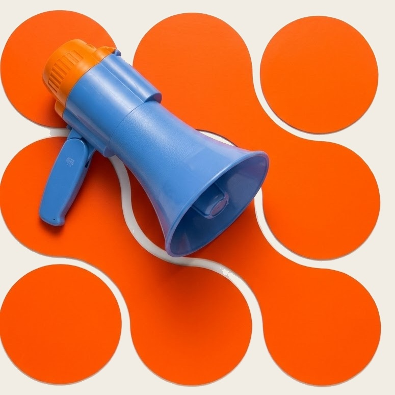
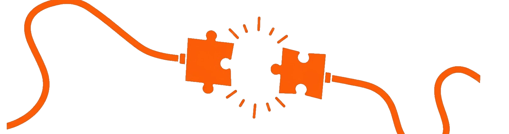
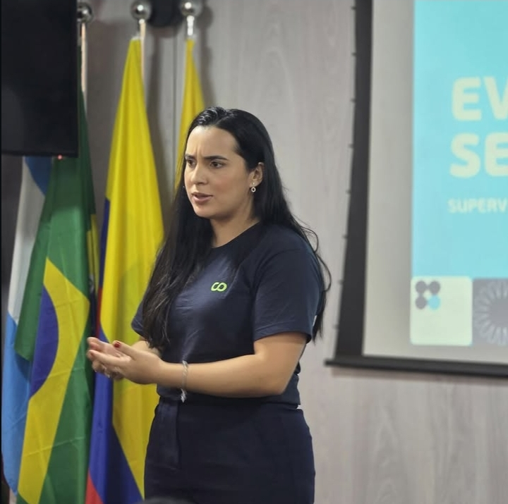

Recursos Humanos · Consultoria de carreira
Sua carreira. Seu próximo capítulo.
Estratégia, posicionamento e direção para construir os próximos passos da sua trajetória profissional.
Vamos conversar
Atendimento personalizado e online para quem quer se apresentar ao mercado com mais clareza.
Posicionamento · confiança · direção
01 O momento profissional
Sua voz merece chegar.

02 Como Ingrid pode ajudar
Estratégia para a sua próxima versão.
Serviços para organizar sua apresentação e seus próximos passos.
-
01Currículo estratégico
Para apresentar experiências e competências de forma clara, relevante e alinhada aos seus objetivos profissionais.
-
02Posicionamento & LinkedIn
Orientação para fortalecer a sua apresentação profissional, destacar competências e comunicar melhor o valor que você entrega.
-
03Preparação para entrevistas
Preparação para contar a sua trajetória, suas competências e experiências com mais clareza e segurança diante de oportunidades.
-
04Direcionamento de carreira
Um espaço de análise para compreender objetivos profissionais e definir os próximos passos com mais intenção.
03 A abordagem
Sua história, com estratégia.
Escuta, clareza e estratégia para o seu momento.

Definir.
Comunicar.

EM AÇÃO Palestra & troca
Sua trajetória também pode ganhar voz.
Comunicar também é ocupar espaço.
Ingrid Nascimento em palestra
FEEDBACKS Mensagens recebidas
Palavras reais.
Trechos literais enviados após atendimentos e análises.
“Gostei bastante do seu serviço. Bastante solícita, objetiva e proativa.”Mensagem de cliente · identidade preservada
Sua avaliação foi de suma importância. Você soube destacar os principais pontos do meu currículo.Mensagem de cliente · identidade preservada
Textos preservados como enviados; apenas nomes e identificações foram omitidos.
Role para avançar
04 Sobre Ingrid
Carreira é sobre pessoas — e sobre o espaço que elas escolhem ocupar.
Ingrid une escuta humana e visão estratégica para apoiar decisões, posicionamento e trajetória profissional.
- AtuaçãoRecursos Humanos, consultoria de carreira e desenvolvimento profissional.
- FormatoAtendimento personalizado e online.
- FormaçãoAdministração de Empresas e pós-graduação em Psicologia Organizacional.
DIAGNÓSTICO Primeiro passo
Por onde começamos?
Escolha um assunto e continue pelo WhatsApp.
Escolha um assunto para continuar pelo WhatsApp.
Continuar no WhatsApp05 Contato
Vamos abrir espaço para o seu próximo capítulo.
O próximo passo pode começar por uma mensagem.